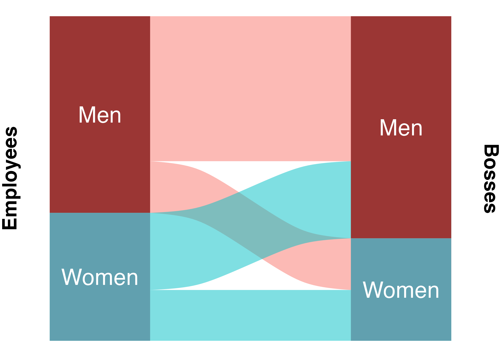
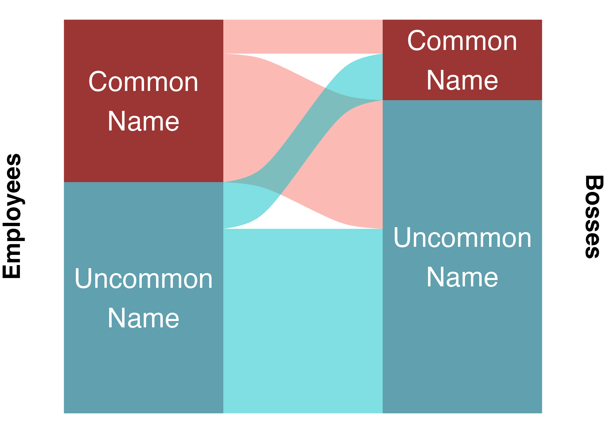
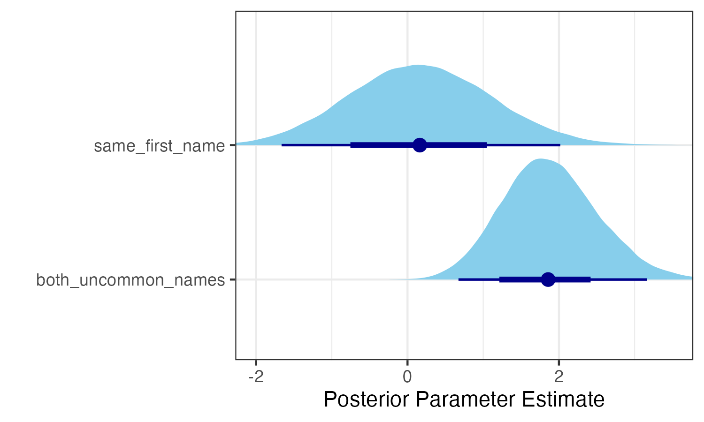

# A tibble: 6 × 5
first_name last_name boss_first_name boss_last_name company
<chr> <chr> <chr> <chr> <chr>
1 Zach Kirkhorn "Elon " Musk Tesla
2 Franz von Holzhausen "Elon " Musk Tesla
3 Tom Zhu "Elon " Musk Tesla
4 Nagesh Saldi "Elon " Musk Tesla
5 James Bickford "Elon " Musk Tesla
6 Bert Somsin "Elon " Musk Tesla Do Employees Tend to Have the Same First Name as Their Bosses?
R
brms
Bayesian Statistics
I was talking to my dad on the phone a few weeks ago, and he brought up a question: Do employers have a bias against hiring employees who have the same first name as they do? Surely, bosses must try to protect their unique name in the same way that fashionable dressers might be annoyed when another party-goer shows up with an identical outfit to their own. And that’s not to mention the opportunity for confusion: How will members of the team distinguish them in conversation? For these reasons, my dad figured there must be some bias against same-name hiring.
But how can we check this empirically?
The first step was to find some data. The best I could find came from The Official Board, which maintains detailed corporate organizational charts for tens of thousands of companies worldwide. I downloaded data on 34,615 employee/boss pairs across 2,292 US companies. This includes 101 instances of bosses and employees with the exact same first name. Here’s an example of the data after some cleaning:
Now we arrive at the first two problems:
- The data only reflect people who did get hired, not people who did not. This means that we are blind to the true probabilities behind the hiring process.
- Employees were not always hired by their current bosses. Sometimes bosses are hired after their employees, and sometimes hiring is managed by other people in the organizational structure. So the boss-employee name match-up we’re looking at might not always be the relevant one.
Problem 1 is not solvable with the data I have here, but that’s OK. It just means that we can’t answer any questions about, say, whether having a particular name makes you more or less likely to get hired in general. We can only compare the dataset to itself: Do same-name matchups occur more or less often than they would if the same set of bosses and employees were matched up randomly?
Problem 2 is also not solvable. It means we have to be a bit careful, and remember that the analysis is about the probability of certain boss-employee matches existing. This is probably mostly a result of certain kinds of bosses hiring certain kinds of employees, but not necessarily.
This brings us to the final problem - one that I can, at least partially, solve: Gender and ethnicity will confound the results: Male bosses might be more likely to have male employees. Since names tend to be gendered, this will make them that much more likely to have the same same, even if there is no bias at all for the names themselves. The same goes for ethnicity: White bosses might be more likely to have white employees, making them more likely to both have common white names. We need to account for these other biases before we can know anything about the one we’re interested in.
This is a tricky problem to solve, since the data do not include the gender and ethnicity of each employee and boss. Thankfully, it’s usually not too hard to guess someone’s gender and ethnicity from on their name. After some shopping, I found this tool for predicting ethnic background, which is available through the ethnicolr python module. This is a decision tree classifier trained on about 130,000 names from Wikipedia. It’s categorization strategy is a bit strange - for example, African American names are considered “British”. This is presumably because many African Americans have names of British origin (as do many white Americans) and are therefore hard to tell apart from those of white people of British ancestry. For my purposes, I further lumped some of the categories together, to get eight: African, Chinese or Korean, Eastern European, Hispanic, Indian, Jewish, Muslim, and Western European or African American. The model outputs probabilities of each ethnic category, I can easily combine categories using the sum rule from probability theory. When I incorporate these probabilities into my model, I can use the product rule to generate, for example, the probability that both the employee and the boss are African.
For gender, I used the predictrace R package, which uses a much more straightforward approach (first names only) based on data from the US census. All of this is of course not perfect, but it should be good enough to account for most of the effects of gender and ethnicity.

While I was at it, I decided to throw in one more possible confounder: name popularity. I know some people with very uncommon names, and they often profess solidarity with other bearers of rare names, having to constantly correct others on pronunciation and spelling. I calculated name popularity based on data from the US Social Security Administration and cutoff at 1 in 1000 to bin names into either “common” or “uncommon”.

Before building the model, there is one more problem to tackle: differences between bosses, and differences between companies. This is important, since companies might have different cultures or priorities that cause them to vary on how they hire vis-a-vis gender and ethnicity. Since bosses often have multiple employees, and companies generally have multiple bosses, this is a job for multilevel modeling.
Now it’s time to build the model. This takes some creativity, for two reasons: First, the dataset is enormous. Second, as noted above, I need to analyze the difference between the true data and a randomly shuffled version, but I can’t include ALL possible random combinations of bosses and employees, since that would make the dataset really really enormous.
Here’s my stategy:
- Choose 250 companies from the real dataset at random. Take the data from those companies and label it
real= 1. - Subset the chosen companies, shuffle the boss-employee pairings randomly (company labels stick with bosses, not necessarily employees), and sample as many rows as are in the
realdata. Label these rowsreal= 0. - Run a Bayesian multilevel logistic regression (predicting log odds that a pairing is real) with 8000 iterations of Markov Chain Monte Carlo sampling, and skeptical priors.
- Repeat steps 1-3 ten times. This iterative resampling process will ward off overfitting (an important concern with so many parameters) and make training more efficient as a bonus.
- Combine all samples of the posterior distributions for each fixed effect (I don’t care about the individual differences between bosses or companies). The ability to combine resampled models like this is a huge advantage of Bayesian methods.
Full code for all of this can be found here.
The model itself looks like this, as formulated in brms:
mod_america_bayes1 <- brm(real ~ 0 + same_first_name + both_uncommon_names + both_male + boss_male + boss_female + both_female + both_EastAsian + both_EastEuropean + both_Japanese + both_Indian + both_African + both_Muslim + both_WestEuropean + WE_Asian + WE_Indian + WE_Muslim + WE_Hispanic + WE_Jewish + boss_female:both_WestEuropean + both_Jewish + both_Hispanic + both_Italian + boss_female:WE_Asian + boss_female:WE_Indian + boss_female:WE_Muslim + boss_female:WE_Hispanic + boss_female:WE_Jewish + both_female:both_WestEuropean + both_female:WE_Asian + both_female:WE_Indian + both_female:WE_Muslim + both_female:WE_Hispanic + both_female:WE_Jewish + both_male:both_WestEuropean + both_male:WE_Asian + both_male:WE_Indian + both_male:WE_Muslim + both_male:WE_Hispanic + both_male:WE_Jewish + boss_male:both_WestEuropean + boss_male:WE_Asian + boss_male:WE_Indian + boss_male:WE_Muslim + boss_male:WE_Hispanic + boss_male:WE_Jewish + (0 + same_first_name + both_uncommon_names + both_male + boss_male + boss_female + both_female + both_EastAsian + both_EastEuropean + both_Japanese + both_Indian + both_African + both_Muslim + both_WestEuropean + both_Jewish + both_Hispanic + both_Italian + WE_Asian + WE_Indian + WE_Muslim + WE_Hispanic + WE_Jewish | company_ID),
data = d_america_train,
family = bernoulli(),
prior = c(
prior(normal(0, 1), class = "b"),
prior(student_t(4, 0, 1), class = "sd")
),
iter = 6000,
warmup = 2000,
cores = 4)both_EastAsian is the probability that both boss and employee are East Asian, based on their full names. WE_Asian is the probability that the boss is Western European or African American and the employee is East Asian or Japanese.
In total there are 45 fixed effects: 1. same first name (binary) 2. both uncommon names (binary) 3-6. gender of boss and employee (four categories, one-hot coded) 7-14. both the same ethnicity (7 ethnic categories, continuous probabilities) 15-19. boss is Western European or African American and the employee is a minority (5 minority groups, continuous probabilities) 20-45. interactions between gender and pairs involving Western European or African American bosses
Notice that there are no intercepts, fixed or random. This is because the dataset is balanced - there is a 50% baseline chance that any pairing will be real, since half of the pairings are real. Similarly, there is a known 50% chance that any given boss or company will be in a real or fake pairing, because of the random sampling process. In log odds, 50% is 0, so the model should be run without intercepts at all.
Results
After waiting for all this to run overnight, we have results!
Below are the posterior parameter estimates for the first six fixed effect parameters. The dark blue lines represent 95% credible intervals.

The model is very unsure about the effect of sharing the same name. This makes sense, since it only happens very rarely. Nevertheless, the model thinks that it’s more likely than not that the effect is positive! In other words, these data constitute evidence that bosses are more likely than chance to have employees that share their first name exactly, even when accounting for name popularity, gender, and ethnicity. In particular, the model’s median estimate for the same_first_name parameter is 0.173. Translating from log odds, this means that, according to the model, having the same name as your boss increases your odds of working together by about 19%.
It is still possible that this is due to confounding effects of gender or ethnicity, either because the AI-based guessing was not good enough, the categories were not specific enough, or because I did not account for interactions between gender and ethnicity.
But what about the other parameters?
The effect of both having an uncommon name is eminently positive, amounting to an odds increase of more that 500%. The parameters for gender and ethnicity are much more difficult to interpret, since 1. they are essentially categorical but not coded in relation to a particular reference group, and 2. they are involved in various interactions. The best way to understand a model like this is to consider particular counterfactuals. For this purpose, I designed an interactive web app. You can play with it right here: